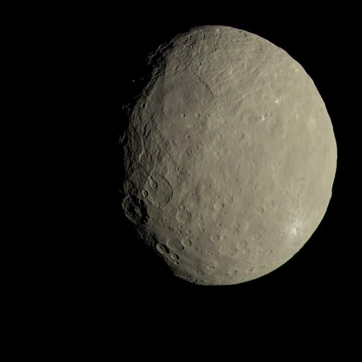
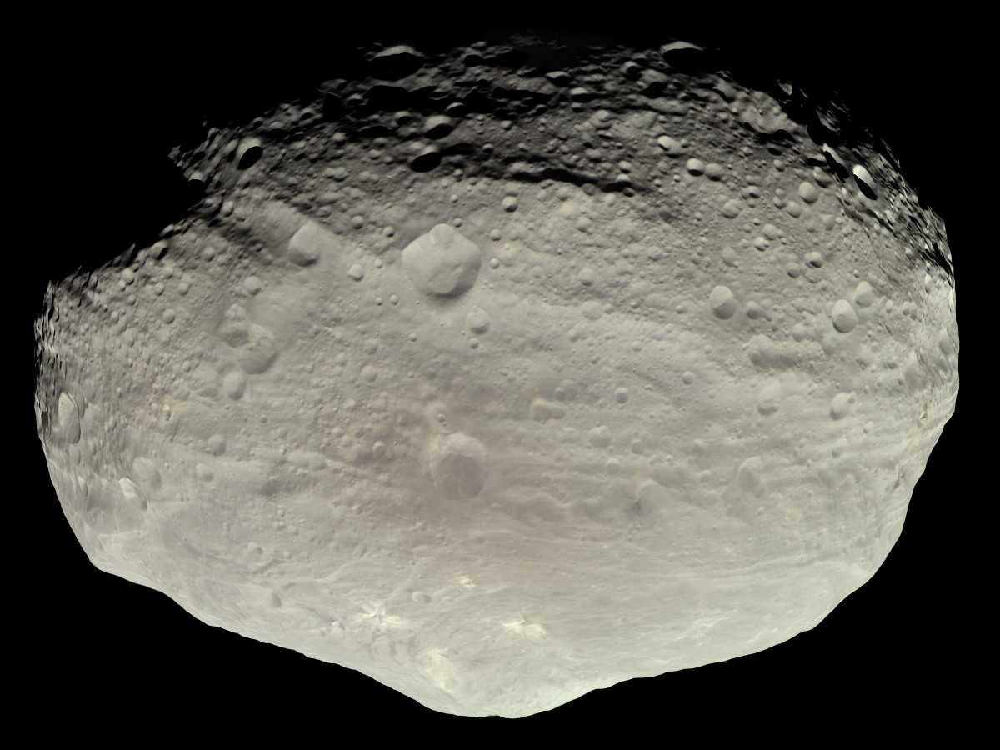

FASCIA DEGLI ASTEROIDI
La fascia principale degli asteroidi e' la regione del Sistema solare situata grossomodo tra le orbite di Marte e di Giove. E' occupata da numerosi corpi di forma irregolare chiamati asteroidi o pianeti minori.
Circa meta' della massa della fascia e' contenuta nei quattro asteroidi piu' grandi : Cerere, Vesta, Pallade e Igea. Gli ultimi tre hanno diametri medi di oltre 400 km, mentre Cerere, l'unico pianeta nano della fascia, ha un diametro medio di circa 950 km. I restanti corpi hanno dimensioni piu' ridotte, fino a quelle di un granello di polvere.

Cerere
Secondo la teoria detta 'ipotesi plantesimale', la fascia degli asteroidi si e' formata dalla nebulosa solare primordiale come aggregazione di plantesimi, che a loro volta hanno formato i protopianeti.
Tra Marte e Giove, tuttavia, le perturbazioni gravitazionali causate da quest'ultimo, avevano dotato i protopianeti di troppa energia orbitale perche' potessero accrescersi in pianeti.
Le collisioni diventarono troppo violente, percio', invece di aggregarsi, i plantesimi e la maggior parte dei protopianeti si frantumarono; di conseguenza, il 99,9% della massa iniziale della fascia degli asteroidi ando' persa nei primi 100 milioni di anni di vita del Sistema solare. Alla fine, alcuni frammenti si fecero strada verso il Sistema solare interno, causando impatti meteoritici con i pianeti interni.

Vesta